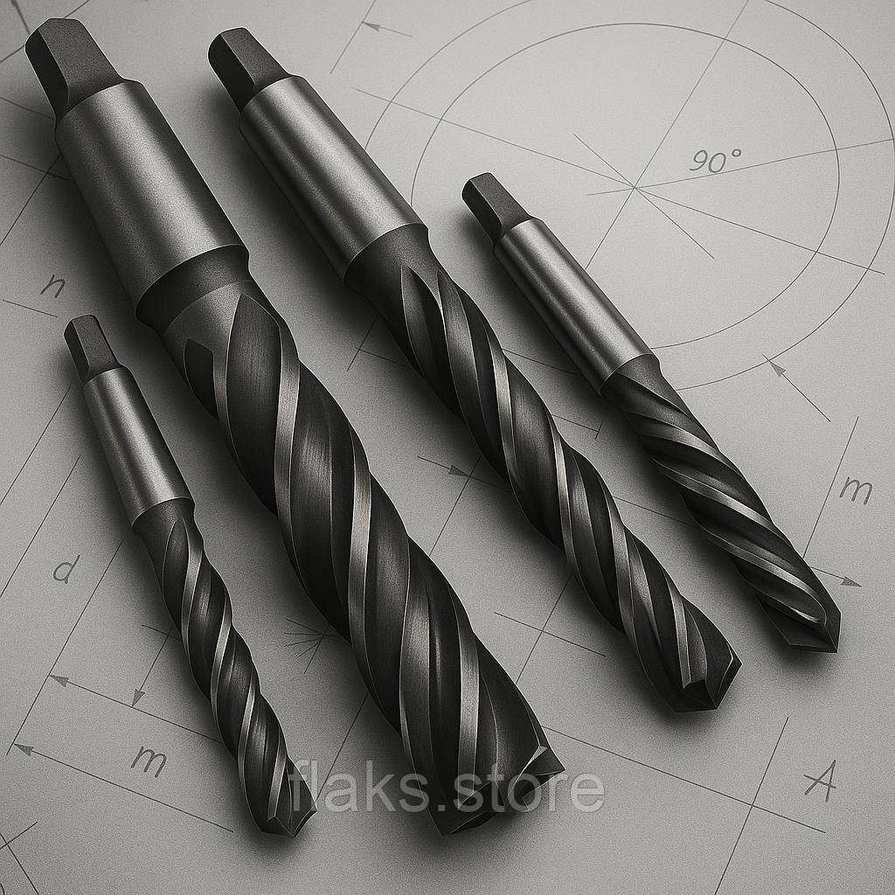

Фрези кінцевіФрезы концевые
Фреза кінцева к/х ф 18.0 КМ2 z=3 115х37 ТИЗ Р6М5К5 по титановим сплавам без центрувального отворуФреза концевая к/х ф 18.0 КМ2 z=3 115х37 ТИЗ Р6М5К5 по титановым сплавам без центровочного отверстия
ОписОписание
Фреза кінцева к/х ф 18.0 КМ2 z=3 115х37 ТИЗ Р6М5К5 по титановим сплавам без центрувального отвору — професійний металорізальний інструмент для фрезерування пазів, уступів, контурів і кишень. Основні параметри: діаметр Ø 18.0 мм, розмір 115×37 мм, кількість зубів z3 та КМ2. Виготовлено з матеріалу кобальтова швидкорізальна сталь Р6М5К5, що забезпечує стійкість різальної кромки при обробці нержавіючих, жароміцних і важкооброблюваних сталей. Виробник: ТИЗ. Інструмент перевірений і готовий до відвантаження. В наявності 9 шт. на складі у Харкові. Ціна 750 грн без ПДВ. Опт і роздріб, відправлення по всій Україні. Замовлення від 2 000 грн.Фреза концевая к/х ф 18.0 КМ2 z=3 115х37 ТИЗ Р6М5К5 по титановым сплавам без центровочного отверстия — профессиональный металлорежущий инструмент для фрезерования пазов, уступов, контуров и карманов. Основные параметры: диаметр Ø 18.0 мм, размер 115×37 мм, число зубьев z3 и КМ2. Изготовлен из материала кобальтовая быстрорежущая сталь Р6М5К5, что обеспечивает стойкость режущей кромки при обработке нержавеющих, жаропрочных и труднообрабатываемых сталей. Производитель: ТИЗ. Инструмент проверен и готов к отгрузке. В наличии 9 шт. на складе в Харькове. Цена 750 грн без НДС. Опт и розница, отправка по всей Украине. Заказ от 2 000 грн.
ХарактеристикиХарактеристики
| Тип інструментуТип инструмента | Фреза кінцеваФреза концевая |
|---|---|
| КатегоріяКатегория | Фрези кінцевіФрезы концевые |
| Діаметр ØДиаметр Ø | 18.0 мм18.0 мм |
| РозміриРазмеры | 115×37 мм115×37 мм |
| Кількість зубів zКоличество зубьев z | 33 |
| МатеріалМатериал | Р6М5К5 / Р6М5Р6М5К5 / Р6М5 |
| ХвостовикХвостовик | конічнийконический |
| Конус МорзеКонус Морзе | КМ2КМ2 |
| ВиробникПроизводитель | ТИЗТИЗ |
| СтанСостояние | новийновый |
| Код товаруКод товара | FLK-06998FLK-06998 |
| НаявністьНаличие | 9 шт.9 шт. |